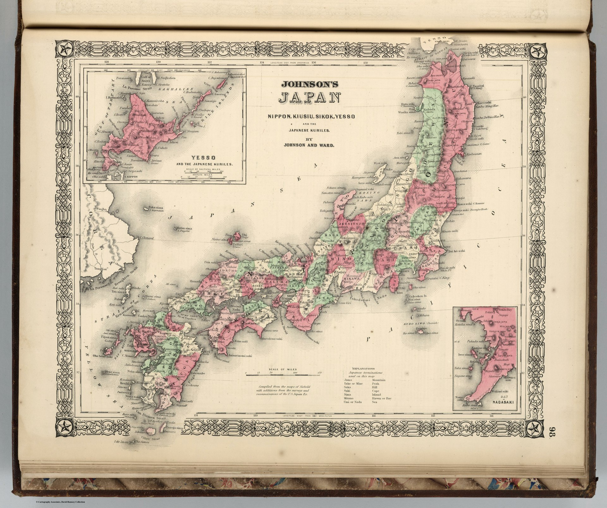

Assistant Professor of Modern Japanese History

Assistant Professor of Modern Japanese History
Friday, November 15, 2013
As part of its Global Japan Project initiative, The Pennsylvania State University, University Park, invites applications for a tenure-track Assistant Professor in Modern Japanese History, with a joint appointment in Asian Studies (75%) and History (25%). Preference will be given to specialists in twentieth-century Japan’s international relations and its roles in global transformations. Teaching responsibilities include introductory, advanced, and graduate courses in the Asian Studies and History curricula. The successful applicant will begin work in August 2014 and must have earned a PhD by then. Funding for the position is contingent on renewal of Penn State’s institutional project support grant from the Japan Foundation. Applicants should submit a letter of application, a curriculum vitae, and a representative writing sample in digital form to the search website: www.la.psu.edu/facultysearch/ . Applicants with appropriate teaching experience should also submit electronic copies of course syllabi. Please arrange to have three letters of reference sent to Jamie Frazell at [email redacted] . For questions about the search website, contact the Search Chair c/o Jamie Frazell at [email redacted] . Applications received in full by November 1, 2013 are guaranteed full consideration, although all applications will be considered until the search is concluded. Employment will require successful completion of background check(s) in accordance with University policies. Penn State is committed to affirmative action, equal opportunity, and the diversity of its workplace.